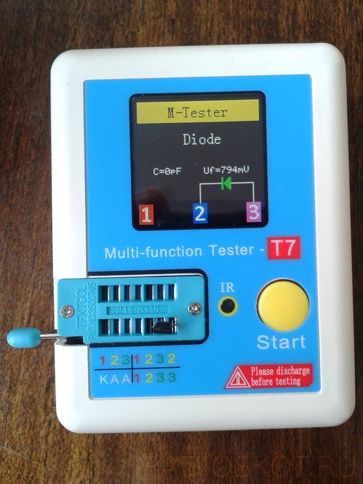
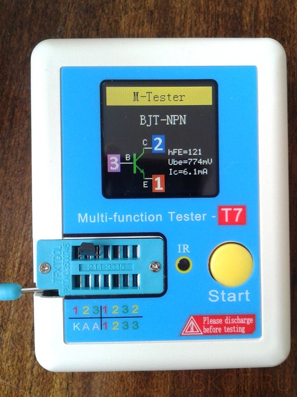

ТРАНЗИСТОР-ТЕСТЕР Т7
07.08.2017 / Измерители
Чем проверить резистор – омметром. А диод? Мультиметром. А конденсатор? Ёмкостеметром. А транзистор…? Но не проще ли купить один прибор, который и будет проверять работоспособность и основные параметры светодиодов, диодов, конденсаторов, транзисторов, резисторов и прочих радиоэлементов. В общем пришло время покупки такого транзистор-тестера на Алиэкспрессе, тем более цена его меньше 30 долларов. Толчком же послужил ремонт стиральной машинки автомата, где для того чтобы проверить электролиты – пришлось бежать к знакомому радиолюбителю. У него-то и заметил такой прибор, сразу воспылав к нему симпатией (к прибору естественно).
На китайском сайте имелось штук 5 основных моделей из недорого ценового сегмента. Решил купить лучшее из худших – транзисторный тестер Т7. Его выгодно отличает наличие корпуса (у многих они так и остаются бескорпусными), литиевый аккумулятор вместо Кроны 9В и цветной красивый дисплей. Ещё там есть возможность расшифровки ИК сигнала, так что приборчик вышел полный шикардос!
ХАРАКТЕРИСТИКИ ТЕСТЕРА T7
КОМПЛЕКТАЦИЯ
В комплекте идут щупы на проводках, которыми можно измерять детали без вставляния в гнездо. И даже пару тестовых деталей продавец не пожалел в коробочку вложить (+ красный светодиод и конденсатор 10 мкФ с резистором 200 Ом к моим запасам).
РАБОТА С УСТРОЙСТВОМ
Тут всего одна кнопка – вставили деталь и нажали "Тест". При включении на пару секунд высвечивает состояние заряда аккумулятора, после чего приступает к тестированию. Результат высвечивается на чёрном фоне цветными символами – красиво! Далее результаты проверок разных деталей.


РАЗБОРКА
Конечно решил заглянуть под крышечку. Внутри та-же знакомая плата, что и в младших моделях. Подозреваю, что всё отличие заключается в прошивке и организации питания. Ну и ладно.
СХЕМА
Основа этого транзисторного цифрового тестера – микроконтроллер AtMega-328. Вот приблизительная схема, плюс введите поправку на модуль заряда АКБ и преобразователь 3,7>9 вольт. Заряжается он от Micro-USB. Для удобства контроля процесса возле гнезда выведен маленький светодиод. Двухцветный.
ВЫВОДЫ ПРО ТЕСТЕР Т7
Плюсы – одни плюсы! Пластиковый корпус качественный и удобный, экран LCD чёткий и яркий, питание аккумуляторное, держит долго (на 100 замеров хватит), универсальный, недорогой (по крайней мере для меня 1500 рублей это нормально), внешние щупы имеются. В общем берите – не пожалеете!